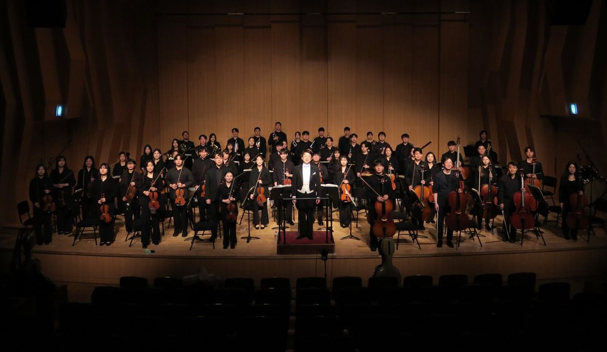
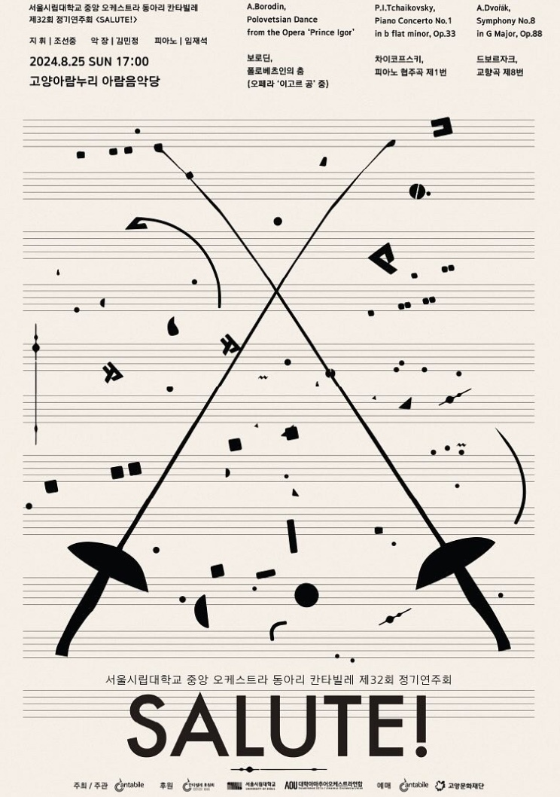
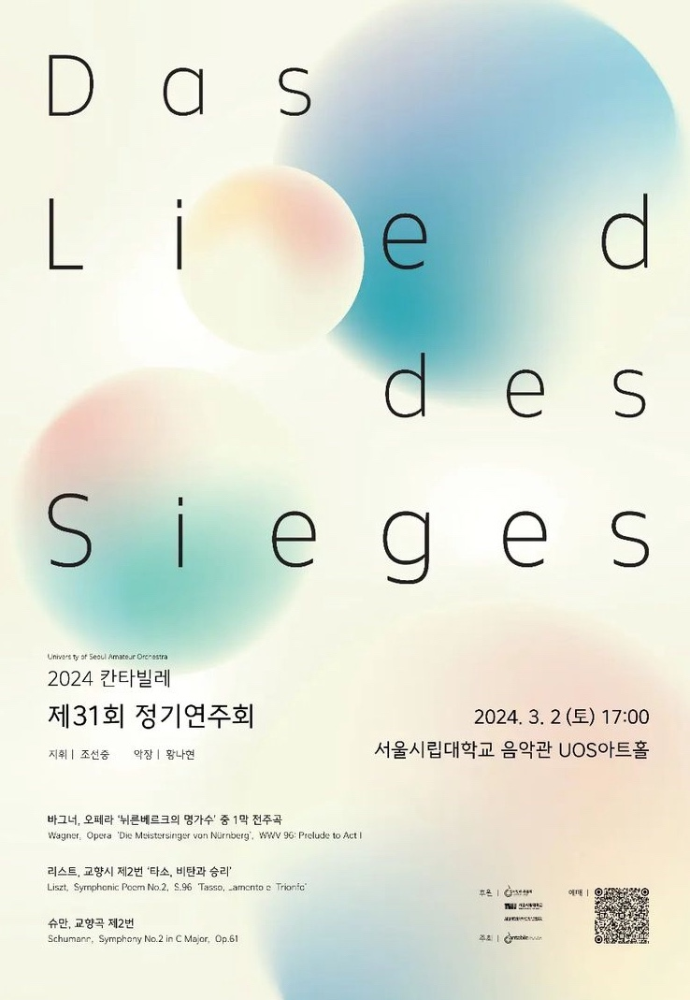
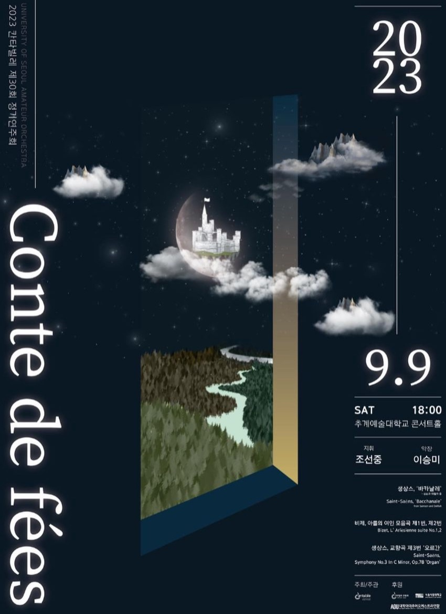
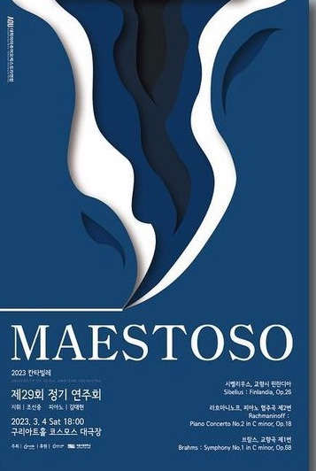
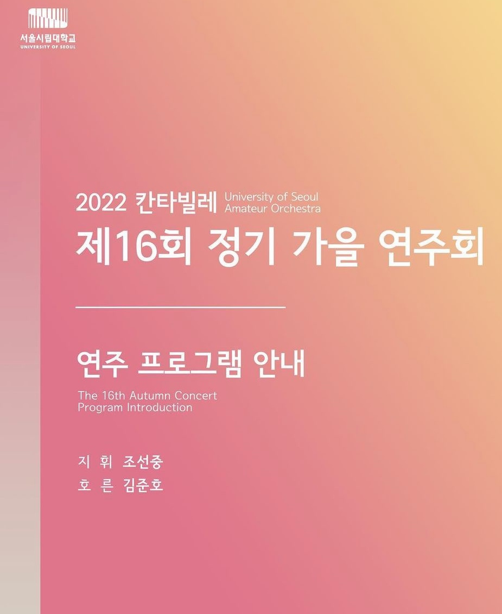

“아름다운 선율을 통해 공동체의 가치를 실현하는 오케스트라 동아리"
서울시립대학교 아마추어 오케스트라 동아리 칸타빌레는 2006년에 창단되어,
전공에 상관없이 클래식 음악을 사랑하는 학생들이 모여 활동하는 중앙동아리입니다.
'칸타빌레'는 '노래하듯이'라는 뜻의 음악 용어로,
아름다운 선율을 함께 연주하자는 취지를 담고 있습니다.
매년 정기연주회를 비롯하여 다양한 공연을 통해 음악적 열정을 나누고 있으며,
악기 연주 경험이 없는 초보자부터 숙련자까지 모두 참여할 수 있고,
음악을 통해 단원 간의 유대감을 형성하고 있습니다.
칸타빌레는 음악을 사랑하는 서울시립대학교 학생이라면 누구나 함께할 수 있는 열린 동아리로,
아름다운 선율을 통해 공동체의 가치를 실현하고자 합니다.
“아름다운 선율을 통해 공동체의 가치를 실현하는 오케스트라 동아리"
서울시립대학교 아마추어 오케스트라 동아리 칸타빌레는 2006년에 창단되어,
전공에 상관없이 클래식 음악을 사랑하는 학생들이 모여 활동하는 중앙동아리입니다.
'칸타빌레'는 '노래하듯이'라는 뜻의 음악 용어로,
아름다운 선율을 함께 연주하자는 취지를 담고 있습니다.
매년 정기연주회를 비롯하여 다양한 공연을 통해 음악적 열정을 나누고 있으며,
악기 연주 경험이 없는 초보자부터 숙련자까지 모두 참여할 수 있고,
음악을 통해 단원 간의 유대감을 형성하고 있습니다.
칸타빌레는 음악을 사랑하는 서울시립대학교 학생이라면 누구나 함께할 수 있는 열린 동아리로,
아름다운 선율을 통해 공동체의 가치를 실현하고자 합니다.





2006 서울시립대학교 CANTABILE 창단
2020 제 15회 가을연주회
2020.09.12 지휘 | 조선중 협연 | 박승관, 정종원
2022 제 12회 봄연주회, 제 16회 가을연주회
2022.03.12 지휘 | 조선중 협연 | 이소미
2022.09.03 지휘 | 조선중 협연 | 김준호
2023 제 29 · 30회 정기연주회
2023.03.04 지휘 | 조선중 협연 | 김대현 악장 | 이승미
2023.09.09 지휘 | 조선중 악장 | 이승미
2024 제 31 · 32회 정기연주회
2024.03.02 지휘 | 조선중 악장 | 황나현
2024.08.25 지휘 | 조선중 협연 | 임재석 악장 | 김민정